I wanted to make a digital photo frame that:
- Would show both pictures and video with sound
- Would have high storage capacity
- Would shuffle the pictures/videos so they weren't in order
- Would have buttons to pause and go forwards/backwards through the slideshow
- Would have the capability of annotating the pictures and video with text
- Would have a motion sensor
- Would be large in size, i.e. a large monitor
- Would all fit in one package to mount on the wall, i.e. storage, the Pi, buttons, the monitor, etc.
- Would be able to handle tens of thousands of pictures and video
- Would not need soldering
Video of media frame in action:
INSTRUCTIONS
NOTE: Some Linux and possibly programming experience is required.
Things you'll need:
- Raspberry Pi (I originally did this project with a Pi 2, but it should work just the same with a Pi 3.)
- SD card with Raspbian
- HDMI cable
- PIR motion sensor
- Female-to-Female Jumper Wires
- Female-to-Male Jumper Wires
- Half size breadboard
- 3 pushbutton switches
- 5V 2.4A MicroUSB power supply
- Raspberry Pi enclosure
- 24" HD Viewsonic LCD monitor with sound and VESA compliant
- Universal Flat Wall Mount for VESA monitor
- Velcro strips
- External Hard Drive
- Rocker switch
- Toggle slide switch
- Hot Glue Gun
- Flexible semi-rigid rubber-coated wire (for mounting PIR sensor)
- Possibly a mircoUSB extension cord if the power supply won't reach
Step 1
Find a spot where your digital media frame will eventually go. You'll want a space that is centrally located which gets high traffic and visibility and where you can mount it on a stud or strut (basically into wood, not drywall). And, of course, it will need access to electricity.Step 2
Since the Pi enclosure doesn't quite fit with our jumper wires and we don't want to solder, we need to make a little room in the enclosure. Use a hacksaw to cut a small section out of the top to allow for our wires to stick out. Fit your Pi into the enclosure and insert your Rasbpian microSD card into the Pi's card slot. 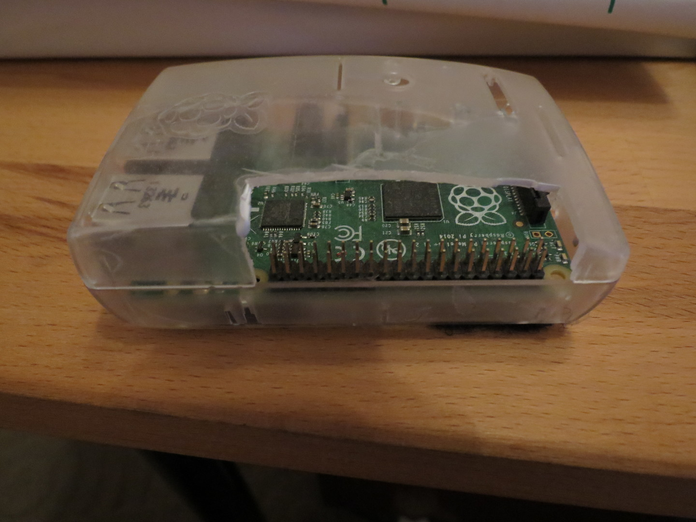Step 3
Now, you should test your Pi. Connect it to the monitor using the HDMI cable and connect it to power using the microUSB power supply. There is no "on/off" switch on the Pi so it will start as soon as it is connected to power. You'll also want to connect a keyboard and a mouse to the Pi initially for testing and setup. Follow some tutorial (such as this) to get the Pi up and running. Make sure your filesystem is expanded, you choose the graphical desktop option for boot, and you update the firmware.Step 4
Next, follow the installation instructions for the original pipresents-next and test it out on one of their examples just to make sure it works.Step 5
Download my fork of pipresents-next here. I've only changed six of the python files (pp_gpio.py, pp_imageplayer.py, pp_medialist.py, pp_mediashow.py, pp_omxdriver.py, pp_videoplayer.py) and I've commented them with the comment string "NIK" around my changes. Of course, I also changed the README.md and the gpio.cfg file. It probably will not work immediately because none of the inputs are connected. So the next thing you need to do is start connecting the gpio inputs.Step 6
Now you will connect up the half-size breadboard with our buttons for next, previous, and pause, and the sensor on/off switch. You will be using female-to-male jumper wires. First, insert the pushbuttons so that they straddle the central groove and are spaced equally apart. Make sure the button prongs are inserted fully into the breadboard. Insert a jumper wire for each button into the row of the left prong, where the row is perpendicular to the middle groove. Each row is electrically connected, so it doesn't matter which of the 5 sockets (not including the +/- columns) you put it in, as long as it is in the same row on the same side of the groove. Leave the female ends dangling for now, we will connect them later to the Pi. 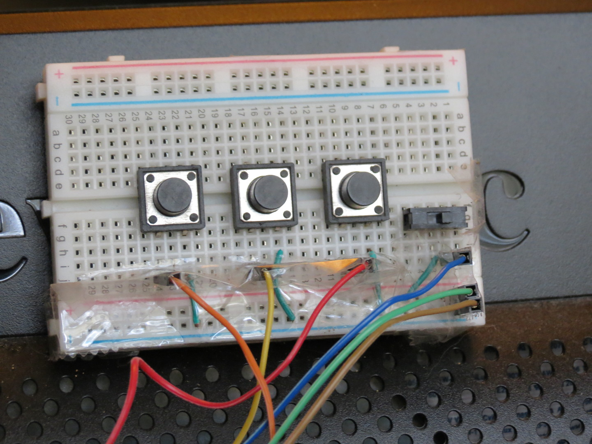 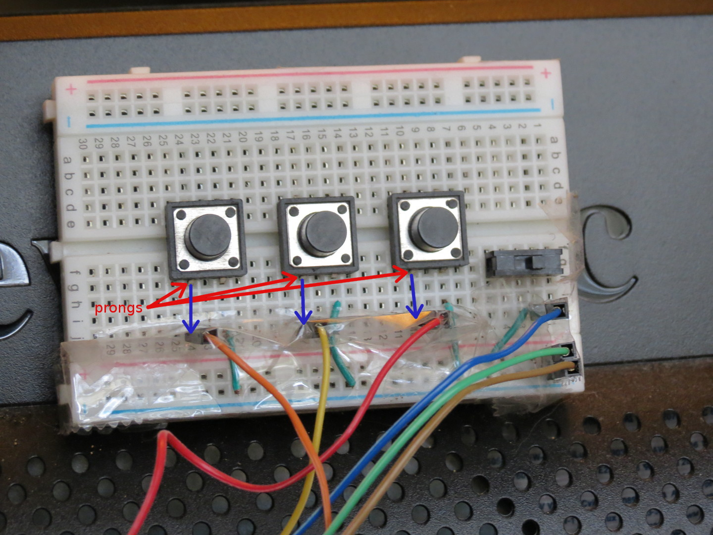 Next, insert two more jumper wires into the end of each of the "+" and "-" columns. These will supply our ground and power for our buttons and switches. In order to connect the buttons to the ground column, you will need to create little wire connectors. In order to do this, take a new wire and cut three small pieces out of it. For each piece, slice off the rubber coating at the ends (without cutting the copper wire underneath). Then twist the bare wire ends to make them easier to insert. 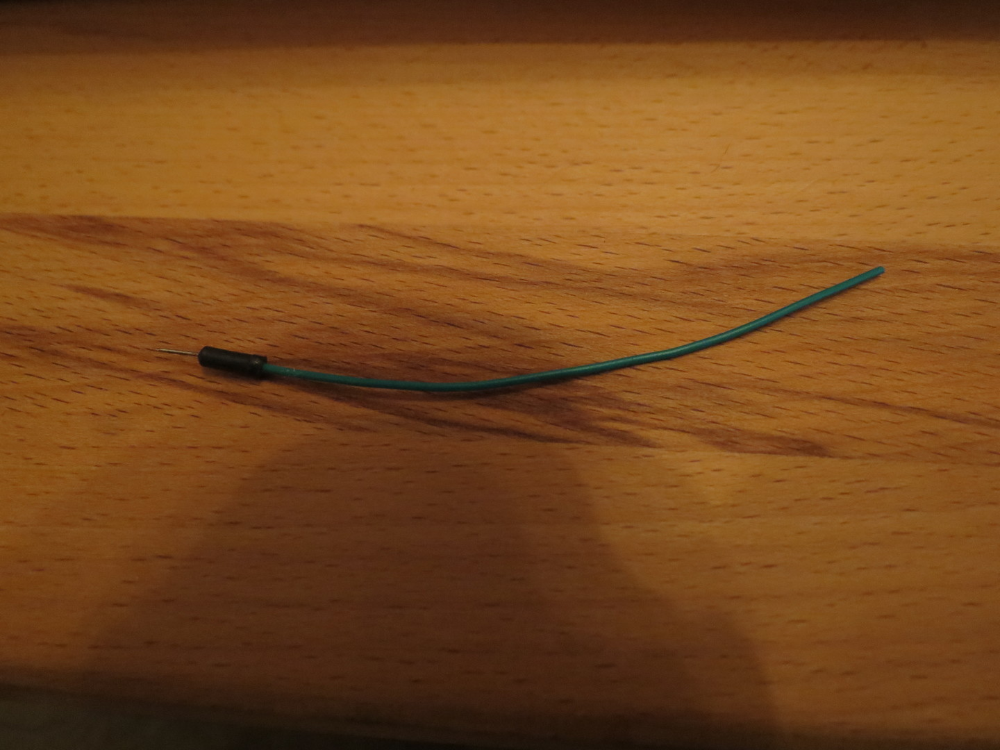 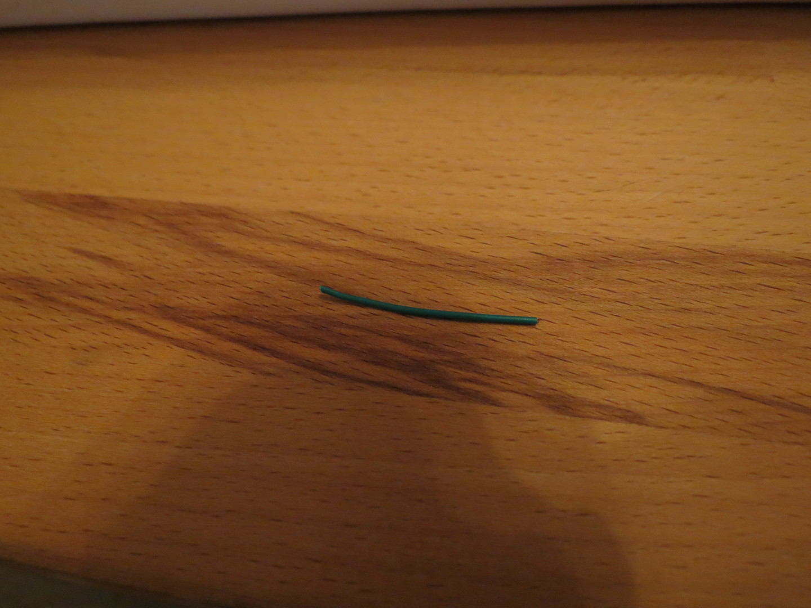 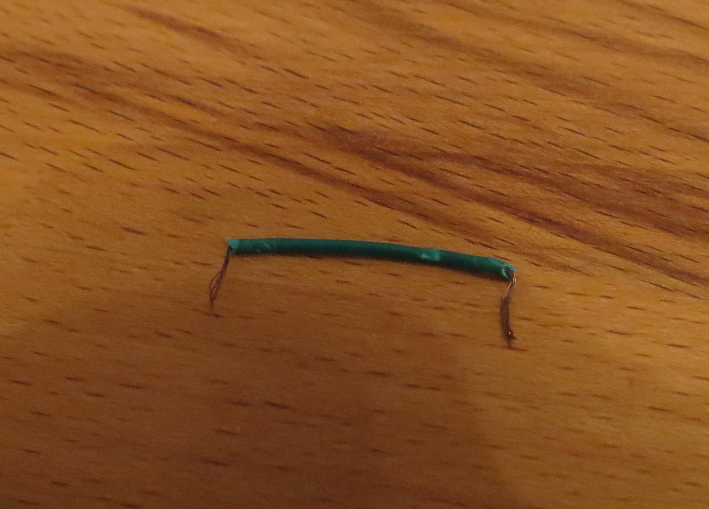 Insert the wires so they connect the other prong of the buttons to the ground (i.e. "-") column. Finally, insert the switch into the board on one side of the buttons. Connect the middle prong of the switch to power using another wire connector and connect the right prong to another female-to-male wire. Then I covered the wire connections in tape so that they would stay secure... hacky, I know. 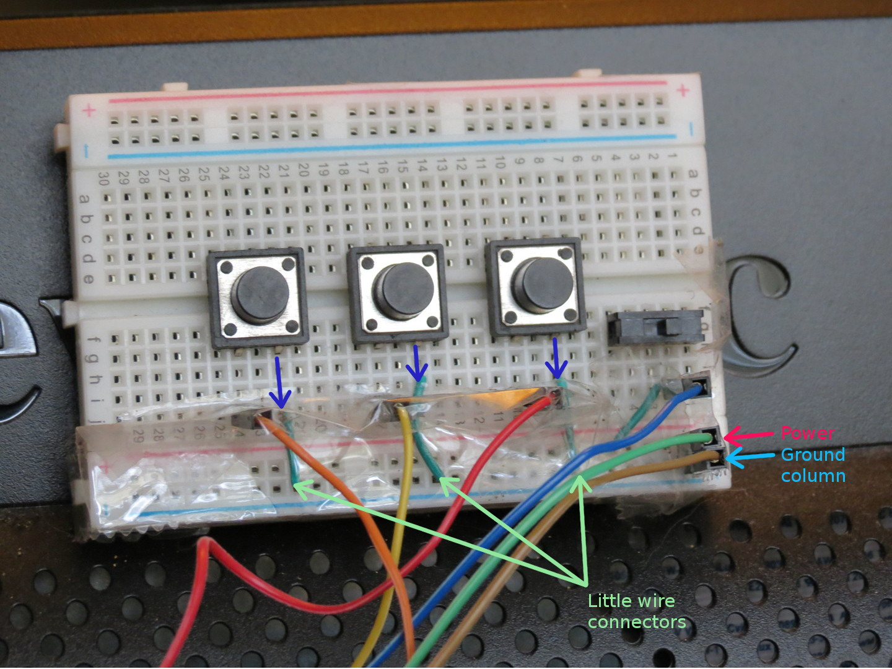Step 7
Now, we will connect the female ends of the wires to the Pi. Here is a simplified pin layout of the Pi: 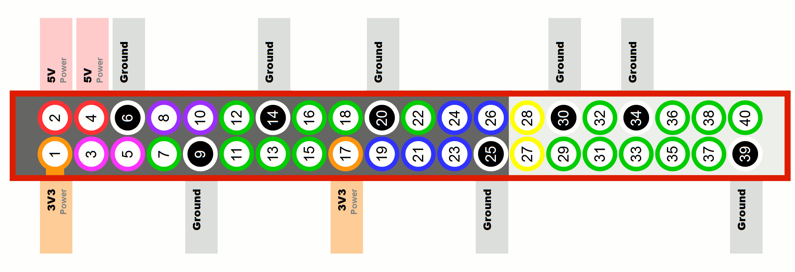 And here are the wires on the breadboard with the corresponding pin numbers of where they connect to: 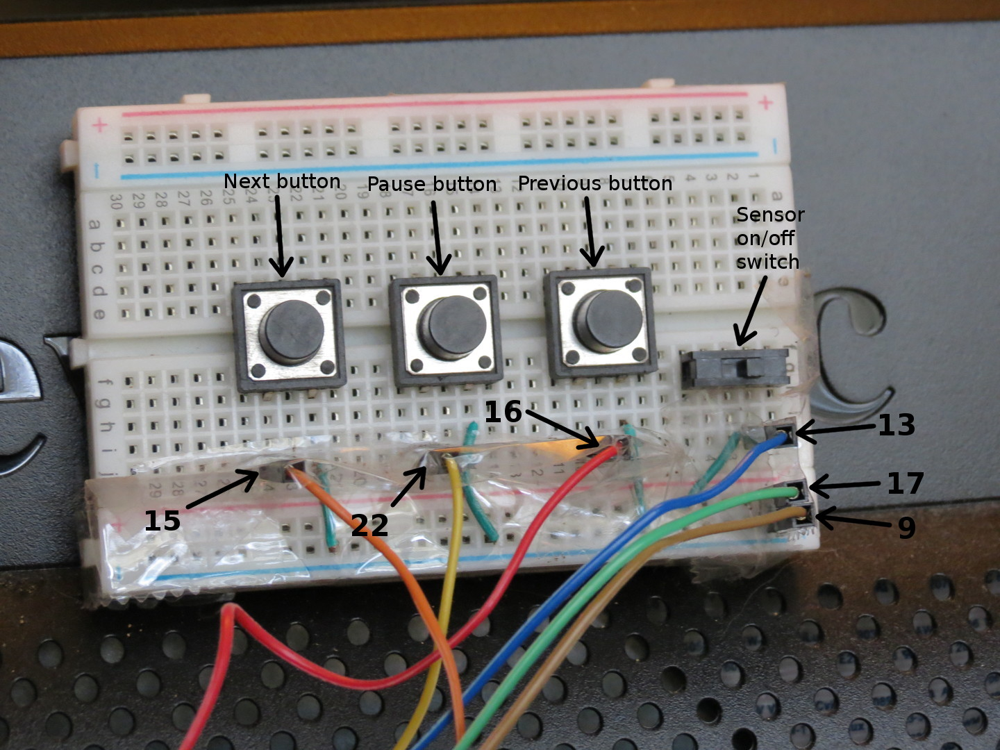 And, finally, here is a diagram of the Pi pins with the numbers the wires connect to: 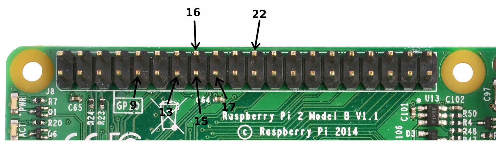 So, simply connect the dangling female ends of the wires from the breadboard to the corresponding pin numbers on the Pi. Finally, at this point, you may want to use velcro to attach the Pi enclosure and the breadboard to the monitor. 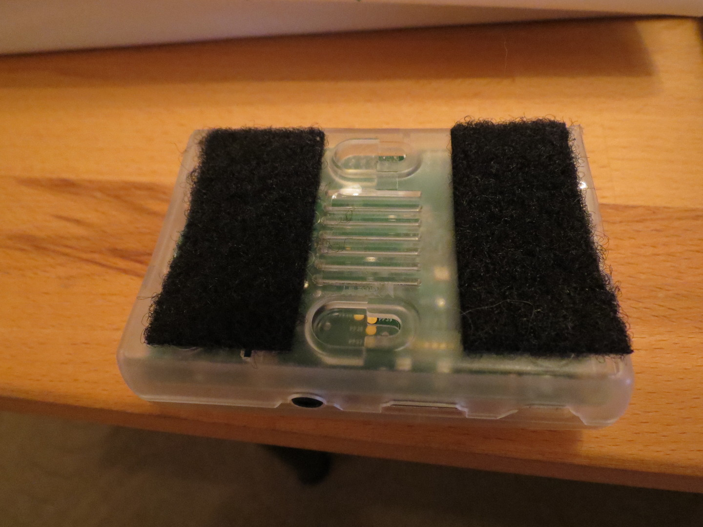 Below is what the final product will look like, but for now attach the enclosure and board to the places where you see them in the picture. 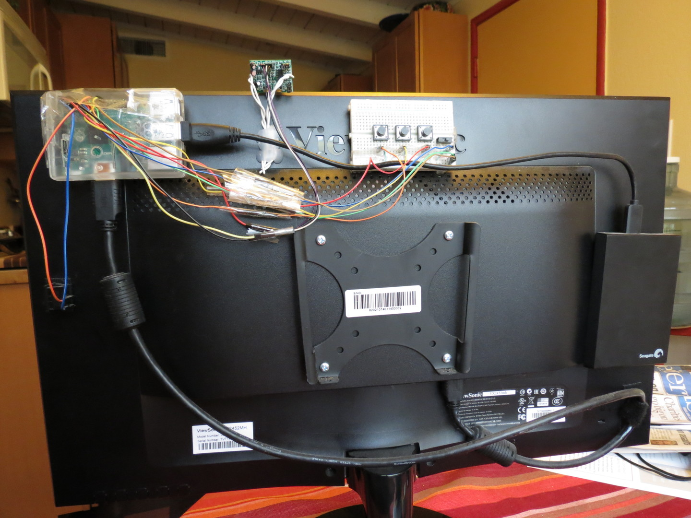Step 8
In this step, we will connect the PIR sensor to the Pi, test out the best settings for it, and mount it on the monitor. First, thread the semi-rigid rubber-coated wire through the holes on the sides of the PIR. This will create a mounting surface. If you have a better way of mounting the sensor without causing electrical interference, then do it, but this is the easiest way I could come up with. Use strong tape to place the sensor on the back of the monitor next to the "Viewsonic" logo (later we will hot glue gun it in place): 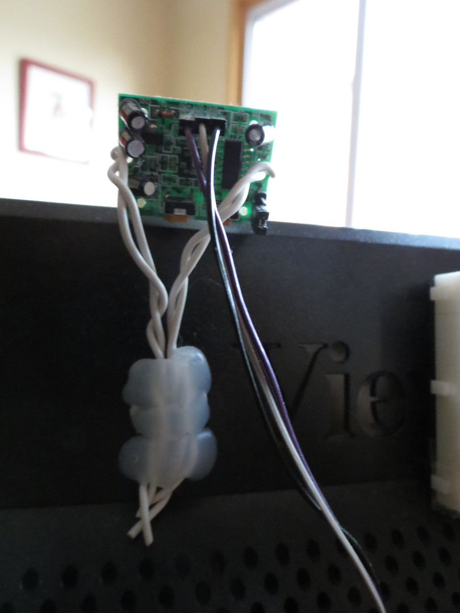 Using female-to-female wires, connect the PIR sensor pins to pins 2, 11, and 6 on the Pi (as shown below): 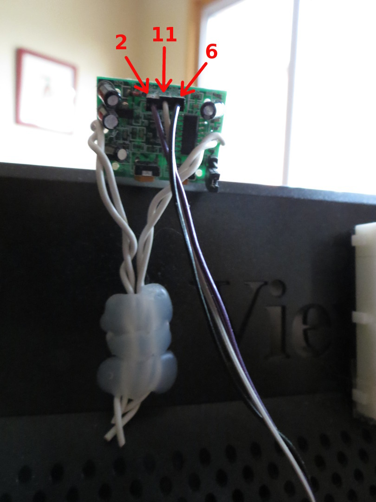 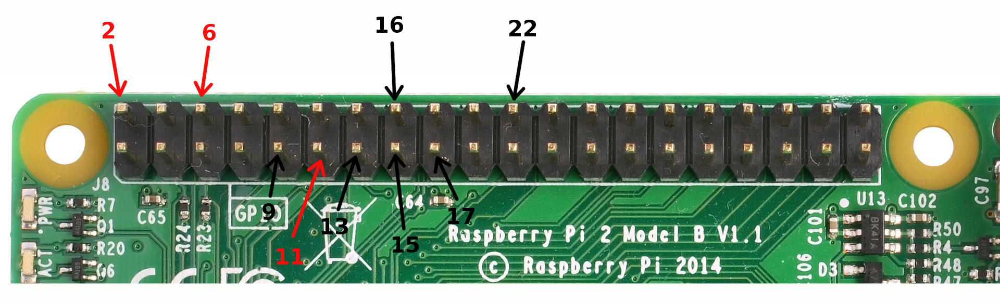 Now, let's test the PIR sensor. You may want to mount the monitor where it is supposed to go, or at least be able to place it there temporarily. You may also want to enable ssh login into the Pi so you don't need a keyboard and mouse connected directly to it. In the digital photo frame repo, there is a "scripts" directory. In that directory, there is a script named "pir.py". Run that script on the command-line on the Pi using sudo (i.e. "sudo pir.py"). This script just runs in a loop and polls the PIR to see if there is signal (i.e. movement). After 30 seconds of no movement, it will put the monitor on standby. Then when there is movement, it will turn the monitor on again. Use this to test the motion sensor and its placement on the monitor. There are also two analog dials on the PIR itself that control the delay of the signal firing (labelled "time") and the sensitivity of the sensor (labelled "sensitive"). You'll want to put the delay at minimum and then play with the sensitivity to get the right distance at which you want motion to trigger the sensor. Finally, when you have figured out the best placement and settings for the PIR, use your hot glue gun on the rubber-coated wire supports to glue it into place.Step 9
In this step, we will add an off switch, tape up the Pi, and add the hard drive. The off switch is optional, as the script that contols the switch is totally separate from pipresents. I just wanted a way to easily switch off the Pi by using a switch to run the "shutdown" command. Unfortuately, it only works as on "off" switch, NOT an "on" switch. After you turn off the Pi, in order to turn it back on you have to power cycle it. So it is pretty janky, and thus not necessary. However, if you do want to add the switch, you will use two female-to-female wires and connect them to the switch by jamming the ends into the prongs. The prongs don't exactly fit the connectors, so you will have to force them. Take a look at the pictures below to see how to connect them: 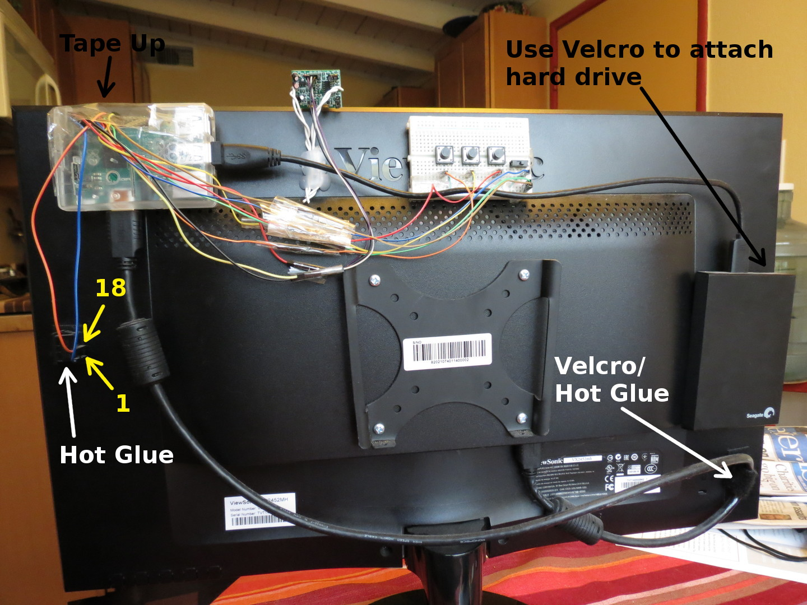 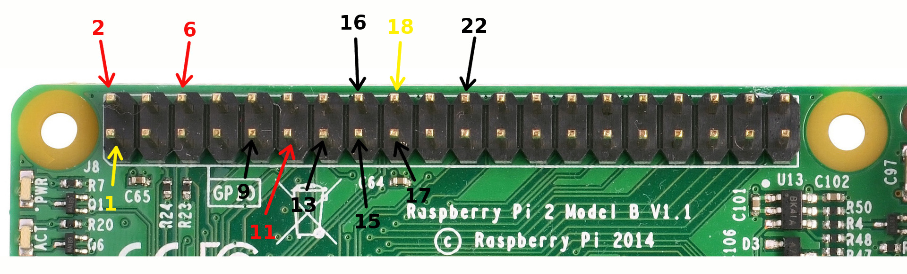 Finally, as shown above, tape up the wires into the Pi so that the hole is covered and the wires are secure. Use hot glue to glue the switch to the monitor. Use velcro to attach the hard drive to the monitor and then connect it to the Pi. Finally, you might need to use some velcro/hot glue combination to keep the HDMI cable from dangling below the monitor.Step 10
Now, let's test pipresents with our enhancements. First, make sure you go to the README on the pipresents page and follow the instructions on installing required applications and installing pexpect. You should read the manual (which is in the repo) and use the profile editor to create a new profile and a new mediashow, but remember to do it in the "pipresents-next-digital-photo-frame" directory. I called mine "digital_media_frame". Keep in mind that pipresents-next cannot handle photo files much larger than 1Mb and does not use the EXIF data in a photo file. So any photos you put into the mediashow will need to be rotated according to the EXIF data and then resized to fit in the monitor. I use "jhead -autorot" and "convert -resize 1920x1080" to do this. You should also put a video in the mediashow to test it out. Remember to run it using "sudo" and with the "--gpio" option. Later, you will use scripts and programs I have written to create the json file for the media show, but for now, test it using the editor. Make sure to test all the buttons and the PIR motion sensor.Step 11
Now, we will make the whole thing production ready. We need to make it so that pipresents starts up automatically and takes up the entire screen, and we need to make some other adjustments for a smooth operation. First, let's change the /boot/config.txt file (using sudo). Uncomment and add/change these lines:
disable_overscan=1
framebuffer_width=1920
framebuffer_height=1080
max_usb_current=1
gpu_mem=128
#!/bin/bash
sleep 10
sudo python /home/pi/pipresents-next-digital-photo-frame/pipresents.py --gpio -f -b -o /home/pi/pipresents-next-digital-photo-frame -p digital_media_frame
Finally, if you added the off switch to your frame, edit /etc/rc.local (using sudo), and put a call to the sd_check.py script located in the scripts directory. So it would look something like this:
sudo /home/pi/pipresents-next-digital-photo-frame/scripts/sd_check.py &
exit 0